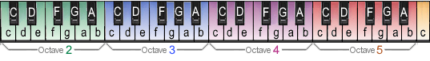

How to Read Piano Tabs

A 49 key piano with notes and octaves.
"4|c" or "c4" means note "c" on octave "4" which is the "c" key in the middle of this keyboard.
Reading tabs (simple):
Here's a simple example of an individual note piano tab... the scale of "f".
4|---------c-d-e-f-| 3|-f-g-a-A---------|
Tabs are read from left to right (notes above and below each other are played simultaneously).
- Numbers: indicate the octave (3 and 4 in the above example). Every octave starts on the "c" key and ends on the "b". Octave 4 is located near the middle of a standard keyboard.
- Lowercase Letters: (a,b,c,d,e,f,g) represent the white keys (the natural notes).
-
UPPERcase Letters: (A,C,D,F,G) represent the black keys (the sharp notes).
For example, "A" represents "A#", "C" represents "C#", and so on.
- A Note on Flats: For simplicity, this system uses only sharps, not flats. So, a "b" flat would be written as its enharmonic equivalent, "A" (or "A#").
- The Upper/lower case method is recommended as it saves space and avoids confusion with flats and "b" notes.
- "|" symbols: The vertical bar "|" separates measures or sections of the music.
- "-" symbols: The dashes "-" represent timing. More dashes between notes mean a longer duration is held—think of them as representing the note's rhythmic value.
Reading Piano Tabs (advanced options):
Piano tabs can describe individual notes (as seen above) or chord names or both. Here's a more advanced example of a piano tab that describes both:
[D] [Gm] R 3|--a-d-F-|--g-d-g-|--------| L 2|F>d>>>>>|g>d>>>>>|F.------|x2 L 1|F>F>>>>>|g>A>>>>>|F.------|
- Letters on the top line: indicate chord names (the [D] and the [Gm] above).
- "R": indicates the notes on the line are played on the Right hand
- "L": indicates the notes on the line are played on the Left hand
- ">" symbols: indicate the note should be held/sustained
- "." symbols: indicate the note should be cut (for a staccato effect)
- "x2": indicates the preceding staff lines (everything to the left) should be repeated the number of times indicated (2 in this example)
Multiple Instrument / Track Tabs:
Multi-track tabs allow you to compose an entire symphony with multiple instruments / tracks in your songs. Here's an example of a simple multi-track tab:
The first number or letter shown is the track/instrument. ^ The second number shown is the octave. ^ ^ 1:4|c-e-c-e---In the example above, the 1:4 means track/instrument 1, octave 4. This can also be written as:
P:4|c-e-c-e---The 'P' signifies a 'Piano' track. Here are some other instrument options:
F:5|c-------- G:4|--e-e-e-- D:3|d-d-D-d--'F' is Flute, 'G' is Guitar, and 'D' is Drum (different notes/pitches of the drum track play different percussion sounds). But if you specify the instrument using the instrument numbers, there are 128 different instruments you can specify (1-128). For example:
7:4|-----------c-e-------------------c-e------- 18:4|-------------------g>>>>>>>>>-------------- 63:4|-----------------------------c-e----------- D:4|--dded--dded--dded--dded--dded--dded--dded-
Other Notations
We get it. Tabs aren't everyone's forte.
A universally accepted method to reading and writing music just does not exist, and that's probably a good thing.
Our all natural organic tab notation is obviously the superior choice, but there hasn't ever been (and likely never will be)
one and only one type of notation. The intricacies of the audio world simply cannot be captured in written notation without sacrificing reading
comprehension for accuracy. Even if there was a common notation that everyone loved and used some jackhole with a website would probably come along
with SongDong.com and ruin it for everyone. wait... what was I talking about again?
Understanding Music Notation File Types
Here's a quick guide to some of the more common music file extensions.
.MID / .MIDI
- Used By: Windows Media Player, VLC Media Player, others
- What it is: A universal file format containing musical data (notes and timing information) rather than actual audio. This makes MIDI files very small and easily editable with specialized software.
- How to Use: The notes within a MIDI file can be viewed and edited in most Digital Audio Workstations (DAWs). We are looking into bringing our own 'MIDI to Tab converter' (from Tabnabber) back online! Maybe.
.NWC
- Used By: Noteworthy Composer, NWC Viewer
- What it is: The native file format for this commercial music composition software.
- How to Use: To view an .NWC file you can use the free NWC Viewer. To edit an .NWC file you need the Noteworthy Composer program. A free trial is available but lacks the ability to save.
.MUS
- Used By: Finale
- What it is: The native file format for Finale, a commercial music notation program by MakeMusic discontinued in 2024.
- How to Use: While Finale has been replaced by Steinberg's Dorico, you may be able to view .MUS files for free if you can find "Finale Notepad", a lightweight viewer once offered by MakeMusic.
.OVE
- Used By: Overture, Score Writer
- What it is: The native file format for the commercial music notation programs by Sonic Scores.
- How to Use: To view or edit .OVE files you will need either the "Overture" software or a slimmed down version of the product called "Score Writer" which is slightly more affordable.
- Used By: Adobe Reader
- What it is: .PDF files can contain images of sheet music or scores.
- How to Use: They typically require software from Adobe to edit them, quality can be variable, and they can be difficult to read unless you know how to read sheet music.
.PTB
- Used By: Power Tab Editor
- What it is: The native file format for this free guitar and bass centric software by Brad Larsen.
- How to Use: .PTB files can be viewed and edited with the "Power Tab Editor" music composition or tab authoring tool.
Image Files (.JPG, .GIF, .PNG, .TIF, .BMP)
- What they are: These are common image file formats. When used for music, they are typically scans or pictures of sheet music.
- Important note: Unlike the other formats listed, these are not editable music files. They are simply static images. This means you cannot easily play them back, transpose them, or extract the musical data. They are useful primarily for viewing or printing if you already know how to read standard sheet music.
.ZIP / .RAR
- What it is: An archive format used to compress one or more files into a single, smaller package. It is often used to bundle multiple sheet music files (like PDFs or images) for easier distribution.
- How to Use: These "archives" need to be extracted to access the files inside. Most modern operating systems can natively handle .ZIP files. For .RAR files you will need a dedicated tool like 7-Zip, WinZip, or WinRAR (all free).
- A Word of Caution: While incredibly useful, always ensure you trust the source of a .ZIP or .RAR file before opening it, as archives can potentially contain malicious software.